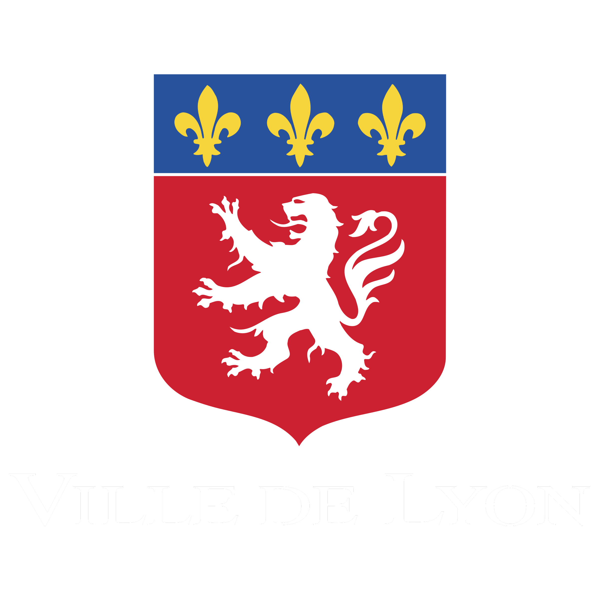

Le “Lug” de “Lugdunum” vient du latin “Lux” qui signifie lumière. Et 2000 ans plus tard, Lyon rayonne toujours par ses figures emblématiques, leur impact culturel et leur succès, national voir mondial pour certains.
Quel dieu celte est à l’origine du nom “Lugdunum”, ancien nom de Lyon ?